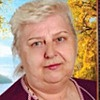
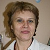

Дошкольное отделение школы № 1981
В 2015 году 70% первоклассников Школы № 1981 пришли из дошкольного отделения.
- Бартеневская улица, 29
- Бартеневская улица, 27к1
- Бартенёвская улица, 27
- улица Адмирала Лазарева, 28к2
- улица Горчакова, 7к1
- Плавский проезд, 7к1
- улица Адмирала Лазарева, 13
Воспитатели
Воспитатели, которых чаще всего благодарят родители (отзывы и профили сотрудников взяты с официального сайта школы):|
Воспитатель
Астахова Любовь Ивановна
6 благодарностей |
Воспитатель
Клапоусова Людмила Анатольевна
2 благодарности |
Воспитатель
Юкина Светлана Владимировна
2 благодарности |
Воспитатель
Сальникова Татьяна Ивановна
2 благодарности |
|
Руководитель
Бурнаева Светлана Викторовна
2 благодарности |
Воспитатель
Ефремова Татьяна Александровна
2 благодарности |
Физ. рук.
Вдовина Ирина Анатольевна
2 благодарности |
Воспитатель
Мишанова Вера Степановна
1 благодарность |
 Логопед
Анищук Ольга Леонидовна
Логопед
Анищук Ольга Леонидовна
1 благодарность |

Воспитатель
Озол Ольга Ивановна
1 благодарность |
Руководитель
Сауткина Елена Ивановна
1 благодарность |
Воспитатель
Сергиенко Светлана Пантелеевна
1 благодарность |
|
Воспитатель
Павлоградская Римма Григорьевна
1 благодарность |
Воспитатель
Хоромская Елена Васильевна
1 благодарность |

Воспитатель
Денисова Галина Анатольевна
1 благодарность |
Воспитатель
Павлюк Валентина Алексеевна
1 благодарность |
|
Руководитель
Неминущая Татьяна Олеговна
1 благодарность |
Воспитатель
Яшина Татьяна Ивановна
1 благодарность |
Отзывы
Данные собраны c официального сайта школы и через форму для отзывов.
Хотим поблагодарить педагогов ГКП СП 2462. Любовь Ивановна и Надежда Ивановна превзошли наши ожидания. Сын очень впечатлительный, сильно привязанный к маме ребёнок. Мы обоснованно переживали за нервное состояние ребёнка. В результате слез практически не было, в садике теперь нравится. Ребёнок дома рассказывает, что сегодня они были воробушками и тому подобные вещи. Даже когда болеет дома ребёнок вспоминает Любовь Ивановну и садик.
Спасибо.
Спасибо.
Добрый день.Я бы хотела выразить огромную благодарность учительнице 1 ,,И" класса ГБОУ ,,Школа1981" СП 1994 Пашкиной Людмиле Николаевне.Моя дочь Аиша пришла туда в январе 2016 года,и я очень переживала,как пройдет адаптация в новом классе,тем более,что класс этот для детей с нарушением зрения.Но Людмила Николаевна сразу нашла подход к моему ребенку благодаря своему профессионализму,доброжелательности и чуткому отношению.Ее талант и индивидуальный подход к каждому ученику позволяет нашим детям получать прочные знания и раскрыть свои способности.
Большое спасибо Вдовиной Ирине Анатольевне,инструктору по плаванию.Благодаря ей моя дочь,боявшаяся воды,за несколько занятий научилась свободно держаться на воде и с удовольствием посещает бассейн.
И,конечно же,отдельное спасибо руководителю нашего структурного подразделения 2433 Бурнаевой Светлане Викторовне за такую профессиональную организацию работы классов для детей с нарушением зрения и возможность учиться с сохранением здоровья.Желаю Вам дальнейших успехов в работе и всех благ.
Большое спасибо Вдовиной Ирине Анатольевне,инструктору по плаванию.Благодаря ей моя дочь,боявшаяся воды,за несколько занятий научилась свободно держаться на воде и с удовольствием посещает бассейн.
И,конечно же,отдельное спасибо руководителю нашего структурного подразделения 2433 Бурнаевой Светлане Викторовне за такую профессиональную организацию работы классов для детей с нарушением зрения и возможность учиться с сохранением здоровья.Желаю Вам дальнейших успехов в работе и всех благ.
Моя дочь посещает группу "Малыш" в детском садике № 2433. Хочу выразить огромную благодарность всем нашим воспитателям - Светлане Пантелеевне, Марине Владимировне и Любовь Юрьевне. Они всегда встречают нас с улыбкой, заботливы и внимательны к нашим деткам. Моя дочь с удовольствием ходит в садик.
Особо я бы хотела отметить Марину Владимировну, спокойная, вежливая и готовая всегда ответить на любой мой вопрос о том, как дочь провела день. Спасибо вам!!!
Особо я бы хотела отметить Марину Владимировну, спокойная, вежливая и готовая всегда ответить на любой мой вопрос о том, как дочь провела день. Спасибо вам!!!
Хочу выразить огромную благодарность Заведующей Неминущей Татьяне Олеговне, воспитателю 3 группы Рябовой Любовь Ивановне, логопеду Лукиной Любовь Анатольевне , всем специалистам в детском саду № 2422. Спасибо Вам за колоссальный труд, безмерное терпение, поистине материнскую заботу, творческий подход, трепетное отношение к нашим детишкам, доброе сердце и за то, что не просто выполняете свои должностные обязанности, а вкладываете в работу свою душу. В этом году мы покинем детский садик и пойдём первый раз в первый класс, но я думаю, что мой ребёнок будет долго помнить свой любимый детский садик.
Моя дочь с огромным удовольствием ходила все эти годы к любимой воспитательницей Любовь Ивановне Рябовой. В нашей группе всегда царила теплая, материнская и дружелюбная атмосфера.
Это воспитатель от Бога!!! Побольше бы таких людей рядом с нашими детишками!!! Низкий Вам поклон от всей нашей семьи!!!
Огромное спасибо за высокую оценку нашего труда! Все, что мы делаем направлено на благо наших с Вами детей!
Постараемся и впредь оправдывать столь высокое доверие родителей!
Администрация.
Моя дочь с огромным удовольствием ходила все эти годы к любимой воспитательницей Любовь Ивановне Рябовой. В нашей группе всегда царила теплая, материнская и дружелюбная атмосфера.
Это воспитатель от Бога!!! Побольше бы таких людей рядом с нашими детишками!!! Низкий Вам поклон от всей нашей семьи!!!
Огромное спасибо за высокую оценку нашего труда! Все, что мы делаем направлено на благо наших с Вами детей!
Постараемся и впредь оправдывать столь высокое доверие родителей!
Администрация.
Хочу выразить слова благодарности воспитателям группы №1 СП 2428 Людмиле Анатольевне и Елене Юрьевне за прекрасный утренник ,посвящённый Дню матери.Праздник получился замечательный:видеть как стараются ребята порадовать своих мам-огромное удовольствие и настоящее счастье.А самое главное видно,сколько сил и души вложили воспитатели в наших деток,ведь именно благодаря им вечер получился таким трогательным.Хочу отметить высокий профессионализм наших педагогов Людмилы Анатольевны,Елены Юрьевны и Ольги Ивановны.Моя дочь с удовольствием посещает детский сад.Спасибо вам большое за ваш нелёгкий труд.
Добрый день! Хочу выразить благодарность воспитателям и специалистам, работающим в детском саду № 2433. Моя дочь пришла в этот сад в январе 2015 года. И конечно меня волновало, как она вольётся в коллектив . Воспитатели (Павлюк Валентина Алексеевна, Денисова Галина Анатольевна, Ефремова Татьяна Александровна) окружили ее такой заботой, что адаптация прошла практически незаметно. В группе очень интересно проводятся занятия и досуг! Праздники, которые проводятся в этом учреждении - выше всяких похвал. 29 октября был "Праздник осени" Я поражен талантом выступающих взрослых, НО как выступали дети! Все четко, с артистизмом. И танцы, и песни, и сценки сказок. БРАВО музыкальному руководителю и воспитателям! Спасибо инструктору бассейна Вдовиной Ирине Анатольевне. Мой дочь, боявшаяся воды, бежит на занятия с огромным удовольствием. Уже через 4 занятия она научилась держаться на воде, плыть на спине. Огромное СПАСИБО руководителю нашего подразделения Бурнаевой Светлане Викторовне за такую организацию работы вверенного ей образовательного учреждения!
Хочу выразить огромную благодарность воспитателям Хоромской Елене Васильевне и Астаховой Любовь Ивановне которые работают в саду 2462 за их хорошую работу с детьми в частности с моей дочерью Светланой. Это воспитатели от Бога и еще очень жалко что от нас ушла очень хорошая заведущая Татьяна Александровна...Я и наша вся группа очень огарчены что от нас убрали воспитателя Астахову Любовь Ивановну.Уважаемый Александр Викторович просим очень вас верните очень нам нашего любимого воспитателя.
Добрый День! 15.06.2015
Наши дети выпустились в 2015 году из д/с 2462. Хотим выразить свою сердечную благодарность и сказать большое спасибо всему коллективу д/с 2462 во главе с заведующей Архиповой Татьяной Александровной.
Особую признательность хотим выразить: воспитателям Павлоградской Римме Григорьевне, Яшиной Татьяне Ивановне, Мишановой Вере Степановне, логопеду Анищук Ольге Леонидовне и психологу Курош Марине Анатольевне за их добросовестный труд, хорошие практические результаты, внимательное отношение к детям и теплые взаимоотношения с родителями своих воспитанников. Их ежедневный кропотливый труд принес и приносит тепло и свет в каждую семью своих маленьких подопечных! Наши дети Соломатины Ярослав и Святослав всегда с трепетом и уважением высказываются о своих педагогах! Мы, как родители, желаем всему коллективу д/с2462 дальнейших творческих и педагогических успехов на этом нелегком пути в воспитании малышей!
С Уважением и благодарность!
Родители Ярослава и Святослава
Соломатин Ю.В. и Франовская О.С.
Наши дети выпустились в 2015 году из д/с 2462. Хотим выразить свою сердечную благодарность и сказать большое спасибо всему коллективу д/с 2462 во главе с заведующей Архиповой Татьяной Александровной.
Особую признательность хотим выразить: воспитателям Павлоградской Римме Григорьевне, Яшиной Татьяне Ивановне, Мишановой Вере Степановне, логопеду Анищук Ольге Леонидовне и психологу Курош Марине Анатольевне за их добросовестный труд, хорошие практические результаты, внимательное отношение к детям и теплые взаимоотношения с родителями своих воспитанников. Их ежедневный кропотливый труд принес и приносит тепло и свет в каждую семью своих маленьких подопечных! Наши дети Соломатины Ярослав и Святослав всегда с трепетом и уважением высказываются о своих педагогах! Мы, как родители, желаем всему коллективу д/с2462 дальнейших творческих и педагогических успехов на этом нелегком пути в воспитании малышей!
С Уважением и благодарность!
Родители Ярослава и Святослава
Соломатин Ю.В. и Франовская О.С.
От всех родителей и детей группы "Зайчики" структурного подразделения "ДС № 2485" по адресу: ул. Адмирала Лазарева, д.13
Хотим выразить искреннюю благодарность нашим воспитателям Сальниковой Татьяне Ивановне и Юкиной Светлане Владимировне.
Более 3-х лет наши дети с удовольствиям ходят в детский сад. Ждут с нетерпением ежедневных встреч с воспитателями и сверстниками. Мы очень признательны Татьяне Ивановне и Светлане Владимировне за то, что они сумели создать дружный детский коллектив, научили наших деток общаться, договариваться между собой. К каждому ребенку нашли индивидуальный подход. Малыши, приходя домой, с гордостью рассказывают чему новому их научили и за что похвалили. Наши воспитатели наладили контакт не только с малышами, но и их родителями. Мы - один большой, единый коллектив. Спасибо им за это огромное.
Отдельная признательность нашему директору Сауткиной Елене Ивановне. За все годы у нас не было ни одного вопроса, по которому мы не нашли общего решения. В саду хорошие игрушки, развивающие материалы и возможности для дополнительного образования детей.
В мире суеты, всевозможных перемен и потрясений у нас есть наша "Тихая гавань" - наш садик.
Наши дети довольны, мы родители - спокойны.
Спасибо воспитателям нашей группы, заведующей и всему коллективу структурного подразделения "Детский сад №2485".
С уважением, родители и дети группы "Зайчики".
Хотим выразить искреннюю благодарность нашим воспитателям Сальниковой Татьяне Ивановне и Юкиной Светлане Владимировне.
Более 3-х лет наши дети с удовольствиям ходят в детский сад. Ждут с нетерпением ежедневных встреч с воспитателями и сверстниками. Мы очень признательны Татьяне Ивановне и Светлане Владимировне за то, что они сумели создать дружный детский коллектив, научили наших деток общаться, договариваться между собой. К каждому ребенку нашли индивидуальный подход. Малыши, приходя домой, с гордостью рассказывают чему новому их научили и за что похвалили. Наши воспитатели наладили контакт не только с малышами, но и их родителями. Мы - один большой, единый коллектив. Спасибо им за это огромное.
Отдельная признательность нашему директору Сауткиной Елене Ивановне. За все годы у нас не было ни одного вопроса, по которому мы не нашли общего решения. В саду хорошие игрушки, развивающие материалы и возможности для дополнительного образования детей.
В мире суеты, всевозможных перемен и потрясений у нас есть наша "Тихая гавань" - наш садик.
Наши дети довольны, мы родители - спокойны.
Спасибо воспитателям нашей группы, заведующей и всему коллективу структурного подразделения "Детский сад №2485".
С уважением, родители и дети группы "Зайчики".
Чермошенцев Александр Викторович
Директор
+7 495 717-17-45
Если вы нашли ошибку или неточность, пожалуйста, сообщите нам об этом.
Ученик, выпускник или родитель? Оставьте отзыв о детском саде.